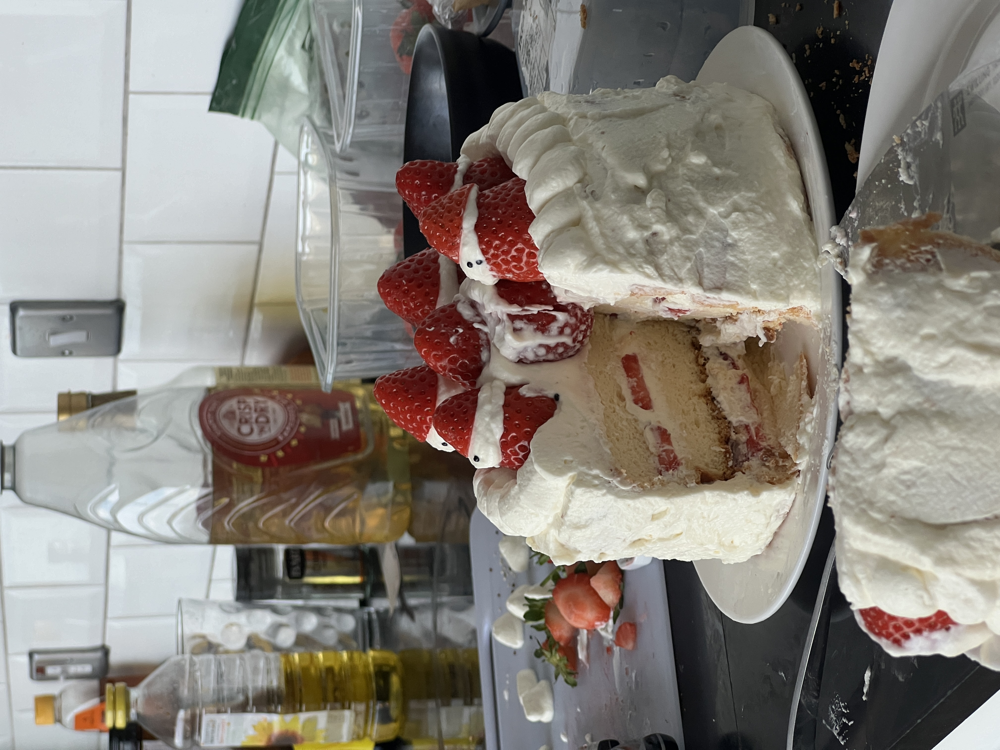

Strawberry Chiffon Shortcake with Whipped Yoghurt Frosting

Description
[15 cm cake] A light, airy layered chiffon cake, balanced with a mellow yoghurt-flavoured whipped cream, and fresh strawberries.
Ingredients
- 35g vegetable oil
- 50g cake flour
- 1tsp vanilla
- 3 large eggs (~50g without shell)
- 1/8tsp cream of tartar (sub 1/4tsp lemon juice or white vinegar)
- 50g sugar
Equipment
- 6" (15cm) pan with removable bottom
- whisk
- spatula
- large bowl
Steps [Chiffon Cake Base]
- Preheat the oven to 149C
- In a large bowl, whisk together cake flour and oil. Add milk and vanilla. Whisk with a side-to-side motion until mostly combined. It's okay to have some lumps remaining.
- Separate eggs, adding yolks directly to bowl with cake flour + oil, and eggds to a large clean mixing bowl.
- Whisk egg yolks into the batter, again with a side-to-side motion, until the batter is smooth and forms a ribbon when dropped from the whisk. If it's too thick, add up to 2tsp milk to thin out.
- Add cream of tartar to egg whites. Whip on high speed until white and foamy. Add in first 1/3 of sugar. Keep whipping on high speed until the egg holds a very very soft peak. Add in next 1/3 of sugar. Switch to medium speed. Whip until there is a soft, floppy peak. Add in last 1/3 of sugar. Switch to medium-low speed. Whip until eggs hold a peak with a stiff base, but a flexible tip.
- Add 1/3 of the egg whites to the batter. Fold in with rubber spatula. Add batter back to rest of the egg whites. Gently fold until there are no streaks of white left in the batter.
- Pour batter into a cake pan. Tap cake pan on counter a few times to get rid of air bubbles. Swirl a toothpick trhough the batter to further remove large air bubbles.
- Bake at 300F for 50-55 minutes, until the top has cracked and turned a light golden. To test for doneness, gently press the top of the cake with a finger. It should not feel wet and should lightly spring back, though it might not spring back all the way. You may still hear sounds of the foam compressing when you press down. That's totally normal. Insert a bamboo skewer into the centre of the cake and it should come out mostly clean, maybe with one or two crumbs.
- Immediately drop the cake pan twice on the counter to release excess hot air / steam. Quickly invert the pan onto two upside down bowls or a cooling rack. Let the cake cool for at least 90 minutes before removing from pan. Can also be left at room temperature overnight to cool.
- Once cooled, press around the top of the cake to release from the sides. Run a thin knife all the way around the perimeter of the cake, pressing tightly against the inside of the cake pan. Pop up the bottom of the cake pan. Press around bottom edge of cake to release from base plate.
- Serve plain or make into Strawberry Shortcake.
Steps [Strawberry Shortcake]